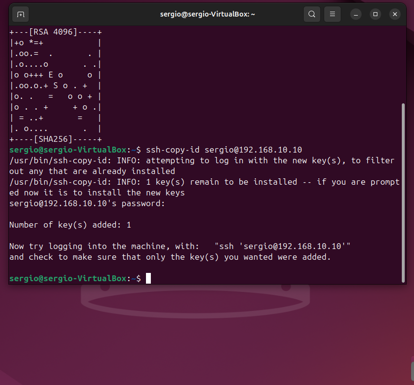
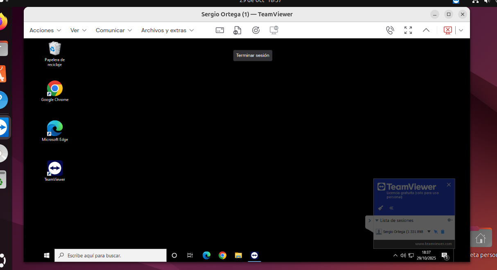

Práctica - Conexión Remota
Guía completa para configurar y utilizar diferentes métodos de conexión remota entre sistemas Windows 10 y Ubuntu Desktop
Instalar OpenSSH
Instalación del Servidor OpenSSH
Primero necesitamos instalar el servidor OpenSSH en nuestro sistema Ubuntu. Este servidor permitirá que otros equipos se conecten a nuestro sistema de forma remota.
sudo apt install openssh-server -y
-y confirma automáticamente la instalación sin requerir intervención del usuario.
Comprobar Instalación
Una vez instalado, verificamos que el servicio SSH esté funcionando correctamente.
sudo systemctl status ssh
Activar Inicio Automático
Para que el servicio SSH se inicie automáticamente al arrancar el sistema, ejecutamos:
sudo systemctl start ssh
sudo systemctl enable ssh
Conexiones Remotas
Conexión desde Windows 10 con PuTTY
PuTTY es un cliente SSH popular para Windows que nos permite conectarnos a servidores remotos.
Paso 1: Descargar e instalar PuTTY
Paso 2: Configurar la conexión
1. Abre PuTTY
2. En el campo "Host Name", ingresa la dirección IP del servidor Ubuntu
3. Puerto: 22 (puerto por defecto de SSH)
4. Connection type: SSH
5. Haz clic en "Open"
| Parámetro | Valor |
|---|---|
| Host Name (IP) | 192.168.10.10 |
| Puerto | 22 |
| Usuario | sergio |
Conexión desde Ubuntu Desktop
En Ubuntu Desktop podemos usar el cliente SSH integrado en la terminal sin necesidad de instalar software adicional.
ssh sergio@192.168.10.10
Donde:
• sergio es el nombre de usuario del sistema remoto
• 192.168.10.10 es la dirección IP del servidor Ubuntu
Conexión sin Contraseña
Autenticación por Clave SSH
La autenticación por clave SSH es más segura que usar contraseñas y permite conectarse sin tener que escribir la contraseña cada vez.
Generar Par de Claves SSH
Ejecuta el siguiente comando en tu equipo local (desde donde te conectarás):
ssh-keygen -t rsa -b 4096
Durante el proceso se te harán las siguientes preguntas:
1. Ubicación del archivo: Presiona Enter para usar la ubicación por defecto (~/.ssh/id_rsa)
2. Passphrase: Puedes dejarlo vacío o agregar una contraseña adicional para mayor seguridad
• id_rsa: Clave privada (¡nunca la compartas!)
• id_rsa.pub: Clave pública (esta se copia al servidor)
Copiar Clave Pública al Servidor
Ahora copiamos la clave pública al servidor remoto:
ssh-copy-id sergio@192.168.10.10
Se te pedirá la contraseña del usuario remoto por última vez. Una vez copiada la clave, podrás conectarte sin contraseña.
Conectarse sin Contraseña
Ahora puedes conectarte sin necesidad de escribir contraseña:
ssh sergio@192.168.10.10
Conexión con RDP
¿Qué es RDP?
RDP (Remote Desktop Protocol) es el protocolo de escritorio remoto de Microsoft que permite controlar gráficamente un equipo Windows desde otro dispositivo.
Habilitar Escritorio Remoto en Windows 10
Para permitir conexiones remotas a tu equipo Windows 10:
Método 1: Configuración del Sistema
1. Abre Configuración (Windows + I)
2. Ve a Sistema > Escritorio remoto
3. Activa Habilitar Escritorio remoto
4. Confirma la acción
Método 2: Panel de Control
1. Haz clic derecho en Este equipo > Propiedades
2. Selecciona Configuración de acceso remoto
3. En la pestaña Acceso remoto, marca:
• "Permitir conexiones remotas a este equipo"
4. Haz clic en Aplicar y Aceptar
| Información | Valor |
|---|---|
| IP de Windows 10 | 192.168.10.12 |
| Puerto RDP | 3389 (por defecto) |
| Usuario | Tu usuario de Windows |
Conectarse desde otro Windows
Windows incluye el cliente de Escritorio remoto por defecto:
1. Presiona Windows + R
2. Escribe mstsc y presiona Enter
3. Ingresa la dirección IP del equipo remoto: 192.168.10.12
4. Haz clic en Conectar
5. Ingresa tus credenciales de Windows
Conexión Ubuntu a Windows 10
Instalar Remmina
Remmina es un cliente de escritorio remoto para Linux que soporta múltiples protocolos, incluyendo RDP, VNC y SSH.
sudo apt install remmina remmina-plugin-rdp -y
• remmina-plugin-rdp: Plugin para soporte RDP
Configurar Conexión en Remmina
Sigue estos pasos para conectarte a Windows 10 desde Ubuntu:
Paso 1: Abrir Remmina
Busca "Remmina" en el menú de aplicaciones o ejecuta:
remmina
Paso 2: Crear Nueva Conexión
1. Haz clic en el botón + (Nueva conexión)
2. Configura los siguientes parámetros:
| Campo | Valor |
|---|---|
| Nombre | Windows 10 (o el nombre que prefieras) |
| Protocolo | RDP - Remote Desktop Protocol |
| Servidor | 192.168.10.12 |
| Nombre de usuario | Tu usuario de Windows |
| Contraseña | Tu contraseña de Windows |
| Resolución | Usar resolución del cliente |
| Calidad de color | True color (24 bpp) o superior |
Paso 3: Conectar
1. Guarda la configuración
2. Haz doble clic en la conexión guardada
3. Si aparece un aviso de certificado, acepta la conexión
Conexión con TeamViewer
TeamViewer en Windows 10
TeamViewer es una solución multiplataforma para acceso remoto que funciona incluso a través de Internet.
Instalación
1. Descarga el instalador para Windows
2. Ejecuta el archivo descargado
3. Sigue el asistente de instalación
4. Selecciona "Uso personal/no comercial" si aplica
Obtener ID y Contraseña
Una vez instalado, TeamViewer mostrará:
| Campo | Valor de ejemplo |
|---|---|
| Su ID | 1329 494 240 |
| Contraseña | ttcyyuvq |
TeamViewer en Ubuntu Desktop
Método 1: Descarga desde el sitio web
1. Ve a www.teamviewer.com
2. Descarga el paquete .deb para Debian/Ubuntu
3. Haz doble clic en el archivo descargado
4. Instala usando el Centro de Software o con:
sudo dpkg -i teamviewer_*.deb
sudo apt-get install -f
Información de conexión
| Campo | Valor de ejemplo |
|---|---|
| Su ID | 1 073 922 808 |
| Contraseña | 8tpmzi51 |
Conectarse a un Equipo Remoto
Desde Windows o Ubuntu
1. Abre TeamViewer
2. En la sección "Controlar equipo remoto"
3. Ingresa el ID del partner (del equipo al que te quieres conectar)
4. Selecciona Control remoto
5. Haz clic en Conectar
6. Ingresa la contraseña del equipo remoto
Desde Windows 10:
Desde Ubuntu Desktop:
Desde dispositivo móvil
1. Descarga la app "TeamViewer" desde tu tienda de aplicaciones
2. Instala y abre la aplicación
3. Toca en "Control remoto"
4. Ingresa el ID del partner
5. Ingresa la contraseña
6. Disfruta del control remoto desde tu móvil
• No requiere configuración de firewall o router
• Multiplataforma (Windows, Linux, macOS, iOS, Android)
• Transferencia de archivos integrada
• Chat durante la sesión